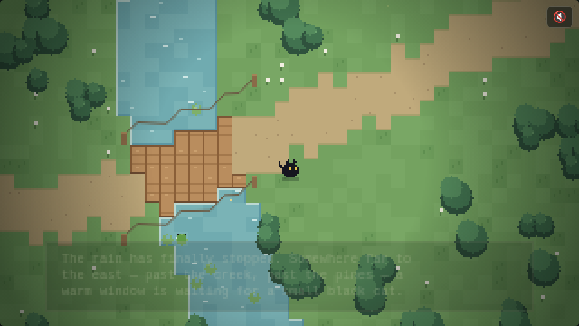
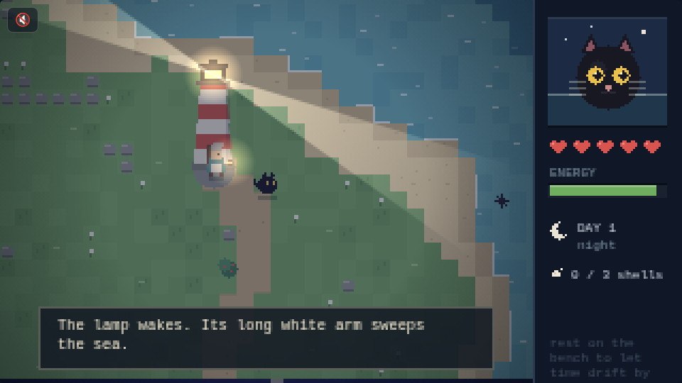
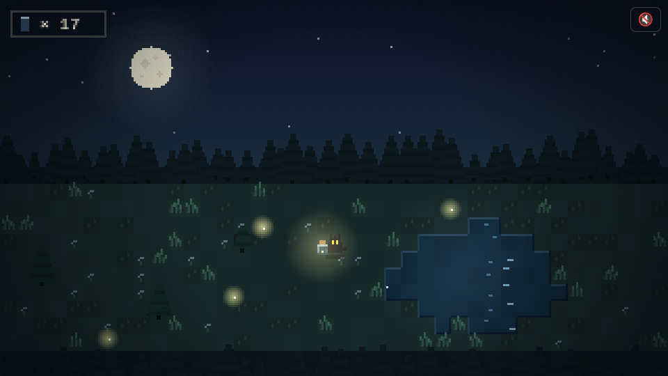
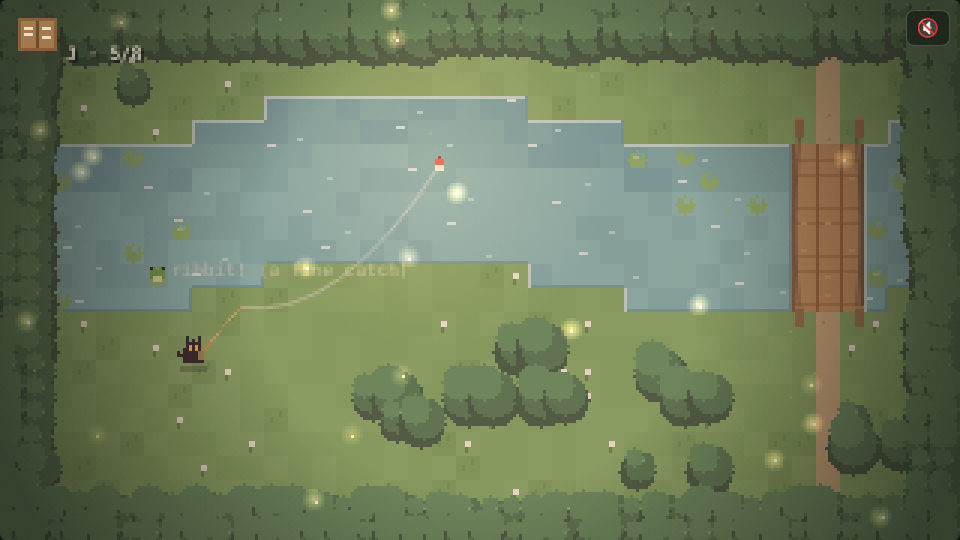
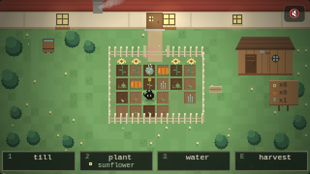
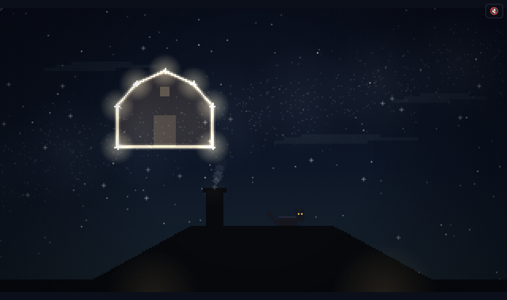

THE COZY ARCADE
tiny tales of a small black cat — no installs, no accounts, just open and play

🏡A WAY HOME
The rain has stopped. Cross the creek, follow the lanterns, and find the warm window waiting far to the east. Where it all began.
▶ WANDER
🗼THE LIGHTHOUSE
An island, a keeper named Maren, and a lamp that turns all night. Swim, snack on beach berries, find her lost shells — and mind the urchins.
▶ SET SAIL
✨FIREFLY CATCHER
One jar, one meadow, one setting moon. Pounce on drifting lights before the night ends — then let every one of them go.
▶ POUNCE
🎣CREEK FISHING
A bamboo rod, a patient frog, and eight things that might tug the line. Fill the journal one gentle catch at a time.
▶ CAST OFF
🌻LITTLE GARDEN
Till, plant, water, wait. Sunflowers, pumpkins, and catnip that grow in real time — even while you're away. Shoo the crows.
▶ PUTTER
🌠STAR PATHS
From the cottage roof, connect the stars — five constellations, five chapters of how one small black cat found her way home.
▶ LOOK UP